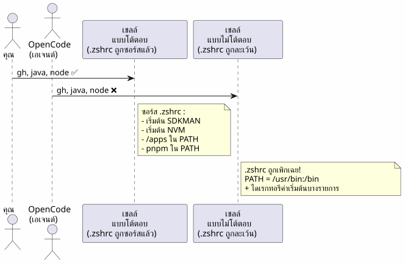
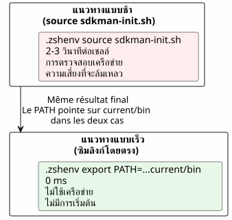
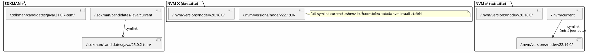
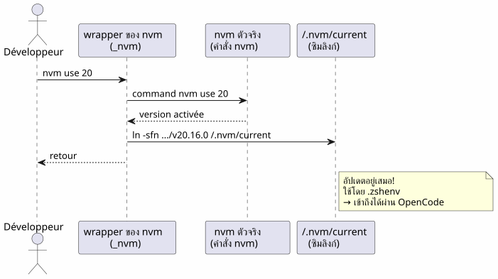
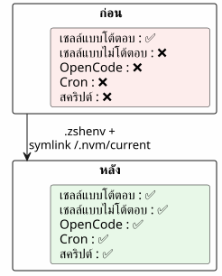

OpenCode และ PATH ที่ไม่สมบูรณ์: ทำไมเครื่องมือของคุณจึงไม่อยู่ใน shell ของเอเจนต์
เผยแพร่เมื่อ 21 April 2026
เวลาอ่าน : 13 minutes
คุณเรียกใช้ OpenCode ในเทอร์มินัลของคุณ ทุกอย่างทำงานได้ เอเจนต์กำลังพยายาม…gh— หาไม่พบ. หนึ่ง`java -version`— ไม่มี. หนึ่ง`node`— ไม่มีที่ไหนเลย ถึงกระนั้น เครื่องมือเหล่านี้ก็อยู่ในเชลล์_ของคุณ_จริง ๆ ปัญหาคืออะไร? OpenCode เปิดเชลล์ไม่โต้ตอบผู้ที่ไม่เคยอ่านของคุณ`.zshrc`. นี่คือวิธีวินิจฉัยและแก้ไขเรื่องนี้อย่างถูกต้อง
- ต็อก
-
Please provide the French source text you would like me to translate into Thai.
ฉาก: เอเจนต์ตาบอดในโลกแห่งเครื่องมือ
เป็นเย็นวันอังคาร ฉันเพิ่งติดตั้งhttps://opencode.ai[โอเพนโค้ด], เอเจนต์ AI ที่เคยสัญญาว่าจะเปลี่ยนวิธีเขียนโค้ดของฉัน การทดสอบครั้งแรก: ขอให้มันแสดงรายการรีโพ GitHub ของฉัน
$ opencode
> Utilise gh pour lister mes repos
❌ bash: gh: command not foundแปลก`gh`ทำงานได้อย่างสมบูรณ์ในเทอร์มินัลของฉัน ฉันลองอย่างอื่น:
> Vérifie la version de Java
❌ bash: java: command not foundจากนั้น:
> Lance le build Gradle
❌ bash: gradle: command not foundJava, Gradle, Node,gh— ทุกสิ่งล่องหนสำหรับเอเจนต์ ส่วนเทอร์มินัลของฉันนั้นมองเห็นทุกอย่าง ราวกับว่าเอเจนต์กับฉันอาศัยอยู่ในสองโลกคู่ขนาน
ฉันใช้เวลาหลายชั่วโมงกว่าจะเข้าใจ หลายชั่วโมงแห่ง`echo $PATH`, de which java, ของความหงุดหงิดที่ทวีขึ้น ในที่สุดฉันก็เข้าใจว่าปัญหาไม่ใช่เครื่องมือ — แต่เป็นเชลล์. OpenCode เช่นเดียวกับเอเจนต์ใดๆ ที่เรียกใช้โปรเซสย่อย ทำงานภายในเชลล์ไม่โต้ตอบ. และ Zsh ในเชลล์เหล่านั้นก็เพิกเฉยต่อของคุณอย่างสิ้นเชิง`.zshrc`.
ต่อไปนี้คือเรื่องเล่าฉบับสมบูรณ์เกี่ยวกับการวินิจฉัยนี้ การแก้ไข และบทเรียนที่ฉันได้รับ หากคุณใช้เอเจนต์ AI — OpenCode, Aider, Cursor หรือแม้แต่สคริปต์ cron — ปัญหานี้จะเกี่ยวข้องกับคุณสักวันหนึ่ง
กายวิภาคของบั๊ก: สองเชลล์ สองโลก
เมื่อคุณเปิดเทอร์มินัล Zsh จะถือว่ามันเป็นเชลล์โต้ตอบได้. เขาโจมตี`.zshrc`, ซึ่งเริ่มต้นทุกอย่าง: SDKMAN, NVM, pnpm, aliases, พร้อมท์สวยๆ ของคุณ สภาพแวดล้อมของคุณพร้อมสมบูรณ์แล้ว
แต่เมื่อ OpenCode รันคำสั่ง มันจะไม่เปิดเทอร์มินัลแบบโต้ตอบ มันจะเปิดเชลล์ไม่โต้ตอบ— เชลล์สำหรับงาน โดยไม่มีมนุษย์อยู่หลังหน้าจอ และ Zsh ในบริบทนี้จะข้าม`.zshrc`. เขาอ่านแค่`.zshenv`The text to be translated is missing — only the instructions and a period were provided. Please send the French text you’d like translated into Thai.
ทำไมความแตกต่างนี้จึงมีอยู่? เพราะเชลล์แบบไม่โต้ตอบถูกออกแบบมาเพื่อรันสคริปต์ ไม่ใช่เพื่อให้บริการผู้ใช้ที่เป็นมนุษย์ การโหลด aliases พร้อมท์ และการเติมคำอัตโนมัติในสคริปต์ที่ทำงานอยู่เบื้องหลังคงเป็นการสิ้นเปลือง ปัญหาคือ PATH ของคุณ — ข้อมูลที่สำคัญที่สุดสำหรับการค้นหาไฟล์ที่เรียกใช้ได้ — มักถูกกำหนดค่าเริ่มต้นใน`.zshrc`, ไม่ใช่ใน`.zshenv`.

ต้นตอของปัญหา:Zsh จะ source .zshrc เฉพาะสำหรับ shell แบบอินเทอร์แอกทีฟเท่านั้น. OpenCode เช่นเดียวกับเอเจนต์ AI ทั้งหมดที่เรียกใช้โปรเซสย่อย ใช้เชลล์แบบไม่โต้ตอบ เชลล์เหล่านี้จะอ่านเฉพาะ`.zshenv`.
ตัวการ: .zshrc กับ .zshenv
Zsh มีไฟล์เริ่มต้นสี่ไฟล์, โดยแต่ละคนมีบทบาทที่เฉพาะเจาะจง นี่คือการออกแบบที่งดงาม — แต่ก็เป็นปมของปัญหาด้วย:
ไฟล์ |
มีแหล่งที่มาเมื่อใด |
บทบาท |
แก้ไข PATH ไหม? |
|
เสมอ(แบบโต้ตอบ + แบบไม่โต้ตอบ + การเข้าสู่ระบบ) |
ตัวแปรสภาพแวดล้อมที่จำเป็น, PATH |
✅ ใช่ — นั่นคือที่ของเขา |
|
เฉพาะเชลล์สำหรับล็อกอินเท่านั้น |
คำสั่งที่ช้า (หนึ่งครั้งต่อเซสชัน) |
เป็นไปได้ |
|
เฉพาะเชลล์แบบโต้ตอบเท่านั้น |
นามแฝง, พรอมต์, การเติมเต็ม, เครื่องมือแบบโต้ตอบ |
❌ ไม่ใช่สำหรับตัวแปรสำคัญ |
|
เชลล์ล็อกอิน (หลัง .zshrc) |
ข้อความต้อนรับ การทำให้เสร็จสิ้น |
นานๆ ครั้ง |
ตารางนี้ให้ข้อบ่งชี้ แต่จำเป็นต้องทำความเข้าใจอย่างลึกซึ้ง ลองคิดว่ามันเหมือนห้องต่างๆ ของบ้าน:
-
`.zshenv`คือโถงทางเข้า— ทุกคนผ่านมาทางนี้ ไม่ว่าจะเป็นผู้มาเยือนหรือผู้อยู่อาศัย หากคุณวางสิ่งใดไว้ที่นี่ ทุกเชลล์จะสามารถเห็นสิ่งนั้นได้
-
`.zshrc`คือห้องนั่งเล่น— เฉพาะผู้อยู่อาศัย (เชลล์แบบโต้ตอบ) เท่านั้นที่เข้าไปได้ ผู้มาเยือน (เชลล์แบบไม่โต้ตอบ) ยังคงอยู่ในห้องโถง
-
.zprofileet `.zlogin`เป็นชิ้นส่วนเฉพาะสำหรับเชลล์ล็อกอิน (เช่นเมื่อคุณเชื่อมต่อผ่าน SSH)
เรื่องน่าเศร้าคือพวกเราส่วนใหญ่เอา PATH ไปไว้ในห้องนั่งเล่น และตัวแทน AI เองก็ไม่เคยมีสิทธิ์เข้าไปในนั้นเลย
ปัญหาในแผนภาพ:

เมื่อคุณเปิดเทอร์มินัล Zsh จะเป็นแบบโต้ตอบ: มันอ่าน`.zshrc`, ทุกอย่างทำงานได้ เมื่อ OpenCode เรียกใช้เชลล์เพื่อรันคำสั่ง Zsh จะไม่เป็นแบบอินเทอร์แอกทีฟ : มันข้าม`.zshrc`, อ่านเพียง`.zshenv`. Et si `.zshenv`ไม่มีอยู่จริงหรือไม่มี PATH — นี่คือทะเลทราย
|
ทำไม Zsh ถึงทำแบบนี้?นี่เป็นตัวเลือกการออกแบบที่สืบทอดมาจาก Unix เชลล์แบบไม่โต้ตอบต้องเป็นเร็ว et ทำซ้ำได้. การโหลด aliases พรอมต์สี และการเริ่มต้นที่หนักหน่วงของ SDKMAN ไว้ในสคริปต์ cron หรือเอเจนต์ AI จะช้าและเปราะบาง ดังนั้นการแยกส่วนจึงสมเหตุสมผล :`.zshenv`โดยส่วนใหญ่ (ตัวแปร, |
การวินิจฉัยทีละขั้นตอน
ก่อนจะแก้ไข จำเป็นต้องเข้าใจให้ชัดเจนว่าขาดอะไรไปจริง ๆ นี่คือวิธีการวินิจฉัยที่ทำซ้ำได้ — เก็บไว้ในรายการโปรดหากคุณทำงานกับเอเจนต์ AI
1. ตรวจสอบ PATH ของเอเจนต์
เราเปรียบเทียบสิ่งที่เทอร์มินัลแบบอินเทอร์แอกทีฟของคุณเห็นกับสิ่งที่เชลล์แบบไม่ใช่อินเทอร์แอกทีฟเห็น — นั่นคือสิ่งที่ OpenCode เห็น
# Dans votre terminal interactif (tout fonctionne)
echo $PATH | tr ':' '\n' | grep -v '^/usr' | sortผลลัพธ์ทั่วไป:
/home/cheroliv/apps
/home/cheroliv/.nvm/versions/node/v22.19.0/bin
/home/cheroliv/.sdkman/candidates/java/current/bin
/home/cheroliv/.sdkman/candidates/gradle/current/bin
/home/cheroliv/.local/share/pnpm
/home/cheroliv/.local/binตอนนี้ มาลองจำลองสิ่งที่เอเจนต์เห็น — เชลล์แบบไม่โต้ตอบ:
# Shell non-interactif : pas de .zshrc
zsh -c 'echo $PATH' | tr ':' '\n' | grep -v '^/usr' | sortผลลัพธ์:
/home/cheroliv/.local/binเส้นทางห้าในหกเส้นหายไปแล้วเอเจนต์ถูกตัดขาดจากสภาพแวดล้อมถึง 83% เหมือนกับมีคนขอให้คุณทำอาหารโดยไม่มีอุปกรณ์ครึ่งหนึ่ง — คุณต้มน้ำได้ แต่ทำอย่างอื่นได้ไม่มากนัก
|
คำสั่ง`zsh -c 'echo $PATH'`คือของคุณเครื่องมือวินิจฉัยหมายเลข 1. หากเครื่องมือที่คุณใช้ทุกวันไม่อยู่ในผลลัพธ์ เอเจนต์ AI ของคุณก็จะไม่สามารถมองเห็นมันได้เช่นกัน ทดสอบมันก่อนและหลังการแก้ไขแต่ละครั้งของ`.zshenv`. |
2. ระบุสิ่งที่มีอยู่ใน .zshrc แต่ไม่มีอยู่ใน .zshenv
ตอนนี้ เรากำลังตามหาตัวคนผิดใน`.zshrc`เรากรองบรรทัดที่กล่าวถึงเครื่องมือของเรา:
grep -n 'apps\|SDKMAN\|NVM\|PNPM\|PATH' ~/.zshrcโดยทั่วไปมักพบ:
119: PATH="/usr/bin/python3:$HOME/apps:$PATH" # ← pas exporté !
171: export NVM_DIR="$HOME/.nvm"
172: [ -s "$NVM_DIR/nvm.sh" ] && \. "$NVM_DIR/nvm.sh" # ← NVM init
176: nvm use --lts --silent # ← active une version
179: export PNPM_HOME="/home/cheroliv/.local/share/pnpm"
187: export SDKMAN_DIR="$HOME/.sdkman"
188: [[ -s "$HOME/.sdkman/bin/sdkman-init.sh" ]] && source "$HOME/.sdkman/bin/sdkman-init.sh"ทั้งหมดนั้นคือมองไม่เห็นสำหรับ OpenCode และ`PATH`ของบรรทัดที่ 119 ก็ไม่ใช่ด้วยซ้ำ`export`é — มันไม่เคยออกจากเชลล์ปัจจุบันเลย นี่คือรายละเอียดทางเทคนิคที่สำคัญมาก: ตัวแปรที่ไม่มี`export`ยังคงเป็นค่าภายในเฉพาะเชลล์ที่กำหนดค่านั้น เชลล์ย่อย — เช่นเชลล์ที่ถูกเรียกโดย OpenCode — จะไม่สืบทอดค่านั้นเลย
3. ตรวจสอบว่า .zshenv มีอยู่หรือไม่
cat ~/.zshenv 2>/dev/null || echo "FICHIER ABSENT"ถ้าคำตอบคือ «FICHIER ABSENT» นั่นแหละคือจุดที่ทุกอย่างขึ้นอยู่
วิธีแก้คือ: .zshenv + พาธที่ถูกต้อง
กลยุทธ์นี้เรียบง่าย แต่ต้องอาศัยความแม่นยำ: ใส่ใน`.zshenv` เท่านั้นเส้นทางที่จำเป็น โดยไม่ซอร์สสคริปต์เริ่มต้นที่หนัก เราไม่ย้าย`.zshrc`ใน`.zshenv`— เราแยกสาระสำคัญออกมา
สร้าง .zshenv พร้อมเส้นทางที่จำเป็นทั้งหมด
`.zshenv`คือไฟล์เดียวที่ Zsh รับประกันว่าจะซอร์สในทั้งหมดบริบทต่างๆ นี่คือที่ที่ PATH ต้องไป
export SDKMAN_DIR="$HOME/.sdkman"
export NVM_DIR="$HOME/.nvm"
export PNPM_HOME="$HOME/.local/share/pnpm"
export PATH="$HOME/apps:$HOME/.sdkman/candidates/java/current/bin:$HOME/.sdkman/candidates/gradle/current/bin:$HOME/.nvm/current/bin:$PNPM_HOME:$HOME/.local/bin:$HOME/.local/share/JetBrains/Toolbox/scripts:/usr/bin/python3:$PATH"|
เราใช้`$HOME/.nvm/current/bin`และไม่`$HOME/.nvm/versions/node/v22.19.0/bin`. เหตุผล: เวอร์ชัน Node เปลี่ยนแปลง พาธที่ฮาร์ดโค้ดไว้จะกลายเป็นใช้ไม่ได้ในครั้งถัดไป`nvm install`. รายละเอียดเพิ่มเติมอยู่ในส่วนถัดไป |
ทำไมไม่ใช้ source sdkman-init.sh ใน .zshenv ?
แนวทางที่น่าดึงดูดใจที่สุดคือการเพียงแค่ทำซ้ำใน`.zshenv`สิ่งที่เราทำใน`.zshrc`— ซอร์สสคริปต์การเริ่มต้นระบบ เราอาจรู้สึกอยากทำ:
# ❌ MAUVAISE IDÉE
[[ -s "$HOME/.sdkman/bin/sdkman-init.sh" ]] && source "$HOME/.sdkman/bin/sdkman-init.sh"ปัญหา:
-
ช้าไม่พบข้อความภาษาฝรั่งเศสที่ต้องการให้แปลในข้อความของคุณ กรุณาส่งข้อความที่ต้องการแปล`sdkman-init.sh`ทำการรีโซลฟ์เครือข่ายและการตรวจสอบในทุกเชลล์ ในเชลล์แบบไม่โต้ตอบ สิ่งนี้เป็นต้นทุนที่ไม่จำเป็น
-
เปราะบาง: SDKMAN คาดหวังบริบทแบบโต้ตอบ การเริ่มต้นทำงานของมันอาจล้มเหลวอย่างเงียบ ๆ ในไปป์หรือซับเชลล์
-
ไร้ประโยชน์: SDKMAN วางผู้สมัครของตนไว้ใน`~/.sdkman/candidates/<tool>/current/bin`— ซิมลิงก์ที่เสถียรซึ่งชี้ไปยังเวอร์ชันที่ใช้งานอยู่ สามารถใช้ลิงก์เหล่านี้ได้โดยตรง.
วิธีที่ถูกต้อง คือ การข้ามการเริ่มต้นของ SDKMAN และชี้ไปที่ symlinks โดยตรง`current`. นี่คือกุญแจสำคัญของการแก้ปัญหาทั้งหมด:ใช้โครงสร้างไฟล์เป็นสัญญา แทนที่จะเป็นโค้ดสำหรับการเริ่มต้น.

กรณี NVM: เมื่อตัวจัดการเวอร์ชันลืมทิ้งร่องรอยไว้
ปัญหา NVM
นี่คือจุดที่การสืบหาข้อมูลพาฉันไปได้ไกลที่สุด SDKMAN มีการออกแบบที่งดงาม เมื่อเราทำ`sdk install java 25.0.2-tem`, เขาสร้าง symlink:
~/.sdkman/candidates/java/current -> ~/.sdkman/candidates/java/25.0.2-temsymlink นี้คืออัปเดตอยู่เสมอ. ชี้ไปที่มันใน`.zshenv`และคุณก็ได้รับการคุ้มครอง ไม่ว่าจะเป็นเชลล์แบบใดก็ตาม สวยงาม
ช่างมันเถอะ เขาไม่สร้างไม่มีอะไรของโทรศัพท์ ไม่มี symlink`current`. ไม่มีจุดยึดที่มั่นคง เราต้องชี้ไปยังพาธที่ระบุเวอร์ชันแบบตายตัว ซึ่งมีลักษณะเช่นนี้ :
~/.nvm/versions/node/v22.19.0/bin/nodeไว้พบกันใหม่`nvm install 24`, เส้นทางนี้ตายแล้ว ของคุณ`.zshenv`จะชี้ไปยังเวอร์ชันที่ไม่ใช่เวอร์ชันที่ใช้งานอยู่อีกต่อไป นี่คือระเบิดเวลา
|
ทำไม NVM ถึงทำแบบนี้?NVM ทำงานโดยการแก้ไข PATH แบบไดนามิกในแต่ละครั้ง`nvm use`. มันถูกออกแบบสำหรับนักพัฒนาที่เปลี่ยนเวอร์ชันบ่อยครั้ง ในเชลล์แบบอินเทอร์แอกทีฟ symlink`current`ไม่ได้อยู่ในข้อกำหนดเริ่มต้น — เป็นความบกพร่องด้านการออกแบบที่เราจะแก้ไขด้วยตนเอง |

วิธีแก้ไข: สร้าง symlink current สำหรับ NVM
เนื่องจาก NVM ไม่ได้ทำ เราจึงทำเอง หลักการเดียวกันกับ SDKMAN — symlink หนึ่งอัน`current`ซึ่งชี้ไปยังเวอร์ชันที่ใช้งานอยู่เสมอ เราสร้างมันขึ้นมาครั้งเดียว แล้วทำให้เป็นอัตโนมัติเพื่อให้มันอัปเดตตัวเองได้เอง
# Créer le symlink initial
ln -sfn "$HOME/.nvm/versions/node/v22.19.0" "$HOME/.nvm/current"ตอนนี้ ใน`.zshenv`, เราใช้:
$HOME/.nvm/current/binแทนที่จะ:
# ❌ Chemin en dur — cassé au prochain changement de version
$HOME/.nvm/versions/node/v22.19.0/binทำให้การอัปเดต symlink เป็นอัตโนมัติ
symlink ไม่มีค่าอะไรเลยหากไม่มีการอัปเดต symlink`current`ต้องอัปเดตเมื่อทำ`nvm use` ou nvm install. ทางออก:ตัวห่อหุ้ม— ฟังก์ชันที่ห่อหุ้มคำสั่งจริง`nvm`และอัปเดต symlink หลังจากทุกครั้งที่เรียก
# À la fin de .zshrc, APRÈS le chargement de NVM
nvm use --lts --silent
ln -sfn "$(nvm_version_path "$(nvm current)")" "$NVM_DIR/current"
_nvm() {
command nvm "$@"
local rc=$?
ln -sfn "$(nvm_version_path "$(nvm current)")" "$NVM_DIR/current"
return $rc
}
alias nvm='_nvm'วิธีการทำงานโดยละเอียด:

ตัวห่อ`_nvm`เรียกใช้คำสั่งจริง`nvm`, จากนั้นอัปเดต symlink อะลิอัส`nvm='_nvm'`ทำให้แน่ใจว่าเมื่อพิมพ์`nvm`, เราจะผ่าน wrapper. และเมื่อเริ่มต้นเชลล์ เราก็ทำเช่นเดียวกันหลังจาก`nvm use --lts`.
|
`nvm_version_path`เป็นฟังก์ชันภายในของ NVM ที่หาเส้นทางแบบเต็มของเวอร์ชัน ซึ่งช่วยหลีกเลี่ยงการสร้างเส้นทางใหม่ด้วยตนเอง |
ตารางสรุปเส้นทาง
ก่อนจะไปสู่หลุมพราง สรุปภาพของการเปลี่ยนแปลง ทางซ้ายคือสิ่งที่คุณมี (ทั้งหมดใน`.zshrc`, มองไม่เห็นสำหรับเอเจนต์) ทางด้านขวา สิ่งที่คุณมีตอนนี้ (เส้นทางสำคัญใน`.zshenv`, มองเห็นได้ทุกที่)
| เครื่องมือ | ก่อนหน้า (.zshrc เท่านั้น) | หลังจาก (.zshenv + symlink) | มองเห็นโดย OpenCode หรือไม่ |
|---|---|---|---|
|
PATH ไม่ได้ถูก export ใน `.zshrc |
`$HOME/apps`ใน `.zshenv |
✅ |
SDKMAN Java |
`sdkman-init.sh`ซอร์สใน .zshrc |
`$HOME/.sdkman/candidates/java/current/bin`ใน .zshenv |
Please provide the French text you’d like me to translate. |
SDKMAN Gradle |
`sdkman-init.sh`ซอร์สใน `.zshrc |
`$HOME/.sdkman/candidates/gradle/current/bin`ใน .zshenv |
✅ |
NVM Node |
`nvm use --lts`ใน .zshrc |
|
Please provide the French text you would like me to translate into Thai. |
pnpm |
`$PNPM_HOME`ใน .zshrc |
`$PNPM_HOME`ใน `.zshenv |
No source text was provided to translate. Please send the French text you’d like translated into Thai. |
JetBrains Toolbox |
เพิ่มอัตโนมัติโดย Toolbox ใน .zshrc |
`$HOME/.local/share/JetBrains/Toolbox/scripts`ใน `.zshenv |
Please provide the French text you’d like me to translate into Thai. |
Python 3 |
`/usr/bin/python3`ใน PATH .zshrc |
อย่างชัดเจนใน .zshenv |
No French source text was provided to translate. Please send the text you’d like translated from French to Thai. |
ข้อควรระวังและมาตรการบรรเทา
ทุกอย่างไม่สมบูรณ์แบบด้วยแนวทางนี้ นี่คือปัญหาที่ฉันพบ และวิธีหลีกเลี่ยงปัญหาเหล่านั้น
| กับดัก | คำอธิบาย | การบรรเทา |
|---|---|---|
PATH ซ้ำ |
ถ้า .zshenv และ .zshrc เพิ่มพาธเดียวกัน มันจะปรากฏสองครั้ง |
`.zshenv`มีแหล่งที่มาก่อน.zshrc. ทั้งสองไฟล์จะถูกอ่านในเชลล์แบบอินเทอร์แอกทีฟ PATH อาจมีรายการซ้ำได้ เป็นเพียงเรื่องความเรียบร้อย ไม่ใช่เรื่องการทำงาน เพื่อหลีกเลี่ยง: ให้ใส่เฉพาะพาธที่ ไม่มีอยู่ ใน PATH เริ่มต้นลงใน .zshenv เท่านั้น |
NVM : เวอร์ชันแบบฮาร์ดโค้ดใน .zshenv |
วาง`~/.nvm/versions/node/v22.19.0/bin`แบบฮาร์ดโค้ดจะกลายเป็นเท็จในครั้งถัดไป`nvm install` |
ใช้ symlink`$HOME/.nvm/current/bin`+ ตัวแรปเปอร์`_nvm`ใน .zshrc |
SDKMAN: ซอร์ส sdkman-init.sh ใน .zshenv |
ช้า เปราะบาง และไร้ประโยชน์ในเชลล์แบบไม่โต้ตอบ |
ใช้ symlinks`candidates/<tool>/current/bin`โดยตรง |
ไม่พบนามแฝงหลังการแก้ไข |
ตัวห่อ`nvm='_nvm'`ใน .zshrc จะมีผลก็ต่อเมื่อโหลดใหม่แล้วเท่านั้น |
รีสตาร์ทเชลล์หรือ`source ~/.zshrc` |
OpenCode ไม่เห็นการเปลี่ยนแปลง |
เอเจนต์ได้เริ่มซับเชลล์ของมันด้วย .zshenv เก่าไปแล้ว |
รีสตาร์ท OpenCode หลังจากแก้ไข .zshenv |
.zshenv มีเนื้อหามากเกินไป |
การใส่ฟังก์ชันที่หนักหรือการเริ่มต้นแบบอินเทอร์แอกทีฟไว้ใน .zshenv |
.zshenv = ตัวแปรสภาพแวดล้อม + PATH เท่านั้น ไม่มี`source`, ไม่มีฟังก์ชันหนัก ๆ, ไม่มีพรอมต์ |
บทเรียนที่ได้รับ
-
.zshrc` เป็นแบบโต้ตอบ,
.zshenvเป็นแบบสากล— หากตัวแปรต้องมีอยู่ใน ทุก เชลล์ (เอเจนต์ AI, cron, สคริปต์, IDE) มันจะอยู่ใน`.zshenv`. ห้องนั่งเล่นสบาย แต่โถงทางเข้าเป็นที่เดียวที่ทุกคนต้องผ่าน -
ตัวจัดการเวอร์ชันไม่ได้เท่าเทียมกัน— SDKMAN สร้าง symlink`current`โดยการออกแบบ NVM ไม่มี ต้องเติมช่องว่างนี้ด้วยตนเอง นี่คือบทเรียนสำคัญ: ก่อนกำหนดค่า PATH ของคุณ ให้ตรวจสอบว่าตัวจัดการของคุณมีจุดยึดที่มั่นคงหรือไม่
-
อย่า source init scripts ใน .zshenvกรุณาระบุข้อความภาษาฝรั่งเศสี่ต้องการให้แปลด้วย`sdkman-init.sh` et `nvm.sh`ถูกออกแบบมาสำหรับเชลล์แบบอินเทอร์แอกทีฟ พวกมันช้าและเปราะบางในบริบทที่ไม่ใช่อินเทอร์แอกทีฟ ลิงก์สัญลักษณ์`current`ก็เพียงพอและเกิดขึ้นทันที
-
ทดสอบในเชลล์แบบไม่โต้ตอบเสมอPlease provide the French text you’d like me to translate into Thai.`zsh -c 'echo $PATH'`จำลองสิ่งที่เอเจนต์เห็นอย่างแม่นยำ นี่คือการทดสอบเพื่อยืนยัน หากไม่มีการทดสอบนี้ คุณจะไม่รู้ว่าการกำหนดค่าของคุณใช้งานได้กับเอเจนต์หรือไม่
-
รูปแบบ wrapper สามารถนำกลับมาใช้ใหม่ได้— รูปแบบเดียวกัน`_nvm`I notice you’ve provided translation instructions (French to Thai, preserving backtick code spans) but the actual French text to translate appears to be missing — the message ends with just a " + " symbol.
Could you please provide the French text you’d like me to translate?`alias nvm='_nvm'`ใช้กับเครื่องมือใดก็ตามที่แก้ไข PATH แบบไดนามิกโดยไม่ทิ้งร่องรอยที่คงที่ นี่คือเครื่องมืออีกหนึ่งชิ้นในกล่องไอเดียของคุณ

การตรวจสอบขั้นสุดท้าย
หลังจากสร้าง`.zshenv`และ symlink NVM ตรวจสอบว่าทุกอย่างทำงานได้ — ในทั้งสองบริบท:
# Shell interactif (votre terminal)
gh --version && java -version && node --version# Shell non-interactif (simulation OpenCode)
zsh -c 'gh --version && java -version && node --version'ทั้งสองอย่างต้องสำเร็จ หากใช่ เอเจนต์ AI ของคุณจะเห็นเครื่องมือชุดเดียวกับคุณ หากไม่ใช่ ให้กลับไปวินิจฉัยทีละขั้น — คุณอาจลืมพาธไปหนึ่งรายการ หรือ symlink ของ NVM ไม่เป็นปัจจุบัน
|
ทำให้การทดสอบนี้เป็นอัตโนมัติเพิ่มการตรวจสอบนี้ในสคริปต์ healthcheck ที่คุณเรียกใช้หลังจากการอัปเดตเครื่องมือของคุณทุกครั้ง หนึ่ง`zsh -c 'which java && which node && which gh'`ใน CI มันคือหลักประกันต่อความไม่คาดคิด |
No source text was provided to translate. เชลล์ที่ไม่โต้ตอบเปรียบเสมือนแขกที่เงียบงัน: มันอ่านเพียงสิ่งที่แสดงอยู่ที่ประตูทางเข้าเท่านั้น หาก PATH อยู่ในห้องนั่งเล่น มันจะไม่มีวันเห็นมัน __
ลิงก์
เอกสารทางการ
-
เอกสารประกอบ Zsh : ไฟล์เริ่มต้น— เอกสารอ้างอิงอย่างเป็นทางการเกี่ยวกับไฟล์เริ่มต้นของ Zsh ทุกสิ่งได้รับการอธิบายไว้ที่นี่ แม้ว่าเรามักจะลืมมันไปก็ตาม
-
OpenCode : การกำหนดค่า— วิธีการกำหนดค่า OpenCode และสภาพแวดล้อมการรันของมัน
เครื่องมือที่กล่าวถึง
-
NVM บน GitHub— Node Version Manager ตัวจัดการเวอร์ชัน Node.js
-
SDKMAN — เว็บไซต์ทางการ— SDKMAN! ตัวจัดการเวอร์ชันสำหรับ JVM (Java, Kotlin, Gradle…)
-
SDKMAN : การติดตั้ง— คู่มือการติดตั้ง SDKMAN
-
gh` — GitHub CLI— เครื่องมือบรรทัดคำสั่งของ GitHub ที่ขาดไม่ได้สำหรับนักพัฒนาทุกคน
-
Gradle — เว็บไซต์ทางการ— ระบบบิลด์ที่เราติดตั้งผ่าน SDKMAN
-
pnpm — เว็บไซต์อย่างเป็นทางการ— ตัวจัดการแพ็กเกจ Node.js ที่รวดเร็วและประหยัดพื้นที่
-
JetBrains Toolbox— ตัวจัดการ IDE ของ JetBrains ซึ่งเพิ่มสคริปต์ของตนลงใน PATH
เพื่อศึกษาเพิ่มเติม
-
Zsh dotfiles : คู่มือฉบับสมบูรณ์— บทความเชิงลึกเกี่ยวกับการจัดการ dotfiles ของ Zsh
-
Zsh บน ArchWiki— หนึ่งในเอกสารชุมชนที่ดีที่สุดเกี่ยวกับ Zsh
-
ปัญหา NVM บน GitHub— เพื่อดูการสนทนาเกี่ยวกับ symlink`current`และปัญหาเกี่ยวกับ `PATH